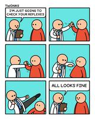

A Starlink satellite broke apart in orbit after suffering an unexplained "anomaly," apparently due to an "internal energetic source" rather than a collision. "The incident appears to have created some debris, with fragments likely to fall to Earth over the next few weeks," reports Scientific American. From the report: The satellite lost communication at about 560 kilometers above Earth, Starlink said. While the statement from Starlink, which is a subsidiary of Musk's rocket company SpaceX, merely noted that investigations are ongoing, LeoLabs said its radar observations of the event indicated an "internal energetic source" as the likely cause rather than a collision.
The incident underscores the potential hazards of the increasingly large numbers of satellites and other spacecraft in low-Earth orbit -- some 10,000 Starlinks are currently in orbit and counting. Starlink's statement said that "the event poses no new risk" to the International Space Station or to the upcoming launch of NASA's Artemis II mission, targeted for April 1.
Read more of this story at Slashdot.
An anonymous reader quotes a report from Reuters: Russia is going to further clamp down Virtual Private Networks (VPNs), which are used by millions of Russians to get around internet controls and censorship, Russia's digital minister said. In what has been cast by diplomats as Russia's "great crackdown," the authorities have repeatedly blocked mobile internet and jammed major messenger services while giving sweeping powers to cut off mass communications. "The task is reduce VPN usage," Digital Minister Maksut Shadayev said on state-backed messenger MAX late on Monday, adding that his ministry was trying to impose the limits with minimal impact on users. He said decisions had been taken to restrict access to a number of unidentified foreign platforms without giving details.
Read more of this story at Slashdot.
An anonymous reader quotes a report from the New York Times: A global ban on taxing digital streaming and downloads across national borders expired on Monday, after members of the World Trade Organization concluded an annual meeting without agreeing to extend it. U.S. representatives had pushed to extend the ban, which prevents the more than 160 members of the W.T.O. from issuing duties related to e-commerce. But Brazil and Turkey blocked a motion for a longer extension.
U.S. representatives excoriated the outcome as further proof of the organization's irrelevance. The W.T.O. provides a forum for trade negotiations and setting rules for global trade. But U.S. officials have long criticized the group for its failure to police unfair trade practices by countries like China. Over the past year, the Trump administration has further abandoned W.T.O. by issuing its own global framework of tariffs instead. [...] Brazil had pushed for a two-year extension of the moratorium on e-commerce duties, while the United States wanted a permanent one. The countries couldn't come to a compromise, but negotiations are set to continue in Geneva this spring. W.T.O. members also failed to reach an agreement on future reforms for the organization. Bernd Lange, the chair of the international trade committee for the European Parliament, wrote in a post on X that "supporters of the multilateral trading system are waking up with a hangover."
"We knew that a breakthrough might not materialize, but that doesn't make it any less painful," he wrote, adding that "without an agreement to extend moratorium on digital tariffs, a period of great uncertainty could soon begin for businesses and consumers."
Jonathan McHale, the vice president of digital trade at the Computer & Communications Industry Association, called the outcome "deeply disappointing." He said: "For more than two decades, W.T.O. members have recognized that imposing tariffs on electronic transmissions would be counterproductive, but allowed the issue to become a negotiating football."
Read more of this story at Slashdot.
Grady Martin writes: A security researcher has leaked a complete repository of source code for Anthropic's flagship command-line tool. The file listing was exposed via a Node Package Manager (npm) mapping, with every target publicly accessible on a Cloudflare R2 storage bucket. There's been a number of discoveries as people continue to pore over the code. The DEV Community outlines some of the leak's most notable architectural elements and the key technical choices:
Architecture Highlights
The Tool System (~40 tools): Claude Code uses a plugin-like tool architecture. Each capability (file read, bash execution, web fetch, LSP integration) is a discrete, permission-gated tool. The base tool definition alone is 29,000 lines of TypeScript.
The Query Engine (46K lines): This is the brain of the operation. It handles all LLM API calls, streaming, caching, and orchestration. It's by far the largest single module in the codebase.
Multi-Agent Orchestration: Claude Code can spawn sub-agents (they call them "swarms") to handle complex, parallelizable tasks. Each agent runs in its own context with specific tool permissions.
IDE Bridge System: A bidirectional communication layer connects IDE extensions (VS Code, JetBrains) to the CLI via JWT-authenticated channels. This is how the "Claude in your editor" experience works.
Persistent Memory System: A file-based memory directory where Claude stores context about you, your project, and your preferences across sessions.
Key Technical Decisions Worth Noting
Bun over Node: They chose Bun as the JavaScript runtime, leveraging its dead code elimination for feature flags and its faster startup times.
React for CLI: Using Ink (React for terminals) is bold. It means their terminal UI is component-based with state management, just like a web app.
Zod v4 for validation: Schema validation is everywhere. Every tool input, every API response, every config file.
~50 slash commands: From /commit to /review-pr to memory management -- there's a command system as rich as any IDE.
Lazy-loaded modules: Heavy dependencies like OpenTelemetry and gRPC are lazy-loaded to keep startup fast.
Read more of this story at Slashdot.
An anonymous reader quotes a report from Reuters: The Trump administration on Monday issued a long-awaited proposed rule to open up retirement plans to alternative assets, paving the way for private equity and cryptocurrencies to be added to 401(k) accounts. The measure, announced by the U.S. Department of Labor, is intended to ease longstanding barriers to incorporating these less liquid and less transparent assets into American retirement plans. It follows an executive order from President Donald Trump last summer and could clear the way for alternative asset management firms to tap a large new source of capital.
Industry groups have argued private market investments can enhance long-term returns and diversification for retirement savers, while skeptics warn higher fees, complexity and limited liquidity could limit those gains and pose risks for retail investors. Some private market funds that are already available to wealthier individual investors have shown signs of strain in recent months. Private credit funds known as business development companies have seen a wave of withdrawals. Treasury Secretary Scott Bessent said the proposed rule was "an initial step" and aimed to be "mindful of the importance of protecting retirement assets."
The guidance lays out how plan trustees, who have a legal fiduciary duty to act in the best interest of members, can incorporate these assets. They would have to "objectively, thoroughly, and analytically consider, and make determinations on factors including performance, fees, liquidity, valuation, performance benchmarks, and complexity," the DOL said. Trustees who abide by them will be granted safe harbor that protects them from lawsuits, it added. The Supreme Court agreed earlier this year to hear one such case filed in 2019 by a former Intel employee claiming trustees made "imprudent" decisions by investing in hedge funds and private equity funds.
Read more of this story at Slashdot.
Researchers at the University of Waterloo say a new "quadratic quantum gravity" framework could explain the universe's rapid early expansion without adding extra ingredients to Einstein's theory by hand. The idea is especially notable because it makes testable predictions, including a minimum level of primordial gravitational waves that future experiments may be able to detect. "Even though this model deals with incredibly high energies, it leads to clear predictions that today's experiments can actually look for," said Dr. Niayesh Afshordi, professor of physics and astronomy at the University of Waterloo and Perimeter Institute (PI). "That direct link between quantum gravity and real data is rare and exciting." Phys.org reports: The research team found that the Big Bang's rapid early expansion can emerge naturally from this simple, consistent theory of quantum gravity, without adding any extra ingredients. This early burst of expansion, often called inflation, is a central idea in modern cosmology because it explains why the universe looks the way it does today.
Their model also predicts a minimum amount of primordial gravitational waves, which are tiny ripples in spacetime geometry created in the first moments after the Big Bang. These signals may be detectable in upcoming experiments, offering a rare chance to test ideas about the universe's quantum origins.
[...] The team plans to refine their predictions for upcoming experiments to explore how their framework connects to particle physics and other puzzles about the early universe. Their long-term goal is to strengthen the bridge between quantum gravity and observational cosmology. The research has been published in the journal Physical Review Letters.
Read more of this story at Slashdot.
Researchers found that common nitrile and latex lab gloves can shed stearate particles that closely resemble microplastics, potentially "increasing the risk of false positives when studying microplastic pollution," reports ScienceDaily.
"We may be overestimating microplastics, but there should be none," said Anne McNeil, senior author of the study and U-M professor of chemistry, macromolecular science and engineering. "There's still a lot out there, and that's the problem." From the report: Researchers found that these gloves can unintentionally transfer particles onto lab tools used to analyze air, water, and other environmental samples. The contamination comes from stearates, which are not plastics but can closely resemble them during testing. Because of this, scientists may be detecting particles that are not true microplastics. To reduce this issue, U-M researchers Madeline Clough and Anne McNeil recommend using cleanroom gloves, which release far fewer particles.
Stearates are salt-based, soap-like substances added to disposable gloves to help them separate easily from molds during manufacturing. However, their chemical similarity to certain plastics makes them difficult to distinguish in lab analyses, increasing the risk of false positives when studying microplastic pollution. "For microplastics researchers who have these impacted datasets, there's still hope to recover them and find a true quantity of microplastics," said researcher and recent doctoral graduate Madeline Clough. "This field is very challenging to work in because there's plastic everywhere," McNeil said. "But that's why we need chemists and people who understand chemical structure to be working in this field."
The findings have been published in the journal Analytical Methods.
Read more of this story at Slashdot.
An anonymous reader quotes a report from New Scientist: Andrea Marinoni at the University of Cambridge, UK, and his colleagues saw that the amount of energy needed to run a data centre had been steadily increasing of late and was likely to "explode" in the coming years, so wanted to quantify the impact. The researchers took satellite measurements of land surface temperatures over the past 20 years and cross-referenced them against the geographical coordinates of more than 8400 AI data centers. Recognizing that surface temperature could be affected by other factors, the researchers chose to focus their investigation on data centers located away from densely populated areas.
They discovered that land surface temperatures increased by an average of 2C (3.6F) in the months after an AI data center started operations. In the most extreme cases, the increase in temperature was 9.1C (16.4F). The effect wasn't limited to the immediate surroundings of the data centers: the team found increased temperatures up to 10 kilometers away. Seven kilometers away, there was only a 30 percent reduction in the intensity. "The results we had were quite surprising," says Marinoni. "This could become a huge problem."
Using population data, the researchers estimate that more than 340 million people live within 10 kilometers of data centers, so live in a place that is warmer than it would be if the data centre hadn't been built there. Marinoni says that areas including the Bajio region in Mexico and the Aragon province in Spain saw a 2C (3.6F) temperature increase in the 20 years between 2004 and 2024 that couldn't otherwise be explained. University of Bristol researcher Chris Preist said the findings may be more complicated than they look. "It would be worth doing follow-up research to understand to what extent it's the heat generated from computation versus the heat generated from the building itself," he says. For example, the building being heated by sunlight may be part of the effect.
The findings of the study, which has not yet been peer-reviewed, can be found on arXiv.
Read more of this story at Slashdot.
MIT Technology Review discovered that startup R3 Bio has pitched an ethically and scientifically explosive long-term vision beyond its public work on non-sentient monkey "organ sacks": creating human "brainless clones" or replacement bodies for organs as part of an extreme life-extension agenda. From the report: Imagine it like this: a baby version of yourself with only enough of a brain structure to be alive in case you ever need a new kidney or liver. Or, alternatively, he has speculated, you might one day get your brain placed into a younger clone. That could be a way to gain a second lifespan through a still hypothetical procedure known as a body transplant.
The fuller context of R3's proposals, as well as activities of another stealth startup with related goals, have not previously been reported. They've been kept secret by a circle of extreme life-extension proponents who fear that their plans for immortality could be derailed by clickbait headlines and public backlash. And that's because the idea can sound like something straight from a creepy science fiction film. One person who heard R3's clone presentation, and spoke on the condition of anonymity, was left reeling by its implications and shaken by [R3 founder John Schloendorn's] enthusiastic delivery. The briefing, this person said, was like a "close encounter of the third kind" with "Dr. Strangelove." [...]
MIT Technology Review found no evidence that R3 has cloned anyone, or even any animal bigger than a rodent. What we did find were documents, additional meeting agendas, and other sources outlining a technical road map for what R3 called "body replacement cloning" in a 2023 letter to supporters. That road map involved improvements to the cloning process and genetic wiring diagrams for how to create animals without complete brains. A main purpose of the fundraising, investors say, was to support efforts to try these techniques in monkeys from a base in the Caribbean. That offered a path to a nearer-term business plan for more ethical medical experiments and toxicology testing -- if the company could develop what it now calls monkey "organ sacks." However, this work would clearly inform any possible human version.
Read more of this story at Slashdot.
Polestar and Volvo are ending Polestar 3 production in Chengdu, China, and consolidating all output of the electric SUV at Volvo's plant in South Carolina. "The move to consolidate global Polestar 3 production in Charleston help[s] generate efficiencies for both companies, whilst also underscoring our confidence in the plant and the role it plays in our manufacturing footprint," said Hakan Samuelsson, chief executive of Volvo Cars. "The U.S. is a very important market for Volvo Cars, both to support our growth ambitions as well as a strategic production site to meet regional and export demands." Ars Technica reports: Volvo had a challenging 2025, with sales falling by 7 percent. Meanwhile, Polestar, which was spun out from the Swedish OEM's performance arm into a standalone startup in 2017, had a rather good 2025, seeing a 34 percent increase in sales. So increasing the proportion of Polestar 3s to come out of South Carolina seems sensible. And as we learned last September, the midsize electric Volvo EX60 will also go into production at the South Carolina site later this year, and then we'll see a still-unnamed hybrid Volvo in 2030.
The two companies also announced today that Volvo agreed to extend part of a shareholder loan it made to Polestar and will convert the rest into Polestar shares. Polestar will still owe Volvo $661 million, due at the end of 2031, and another $274 million will become Polestar stock now, with a further $65 million in the second quarter of the year. Since December, Polestar has also raised $1 billion through three equity financing investments.
Read more of this story at Slashdot.
A top EU official is urging Europeans to work from home, drive less, and cut air travel as the bloc braces for a prolonged energy crisis triggered by the Gulf conflict. The European Commission is also pushing member states to accelerate renewables and other energy-security measures as oil and gas disruptions continue. Politico reports: In a speech with echoes of the early days of the coronavirus pandemic, EU energy chief Dan Jorgensen said Europe was facing a "very serious situation" with no clear end in sight. "Even if ... peace is here tomorrow, still we will not go back to normal in the foreseeable future," he said, following an extraordinary meeting of the EU's 27 energy ministers on Tuesday to discuss the crisis. "The more you can do to save oil, especially diesel, especially jet fuel, the better we are off," Jorgensen said, confirming an earlier report by POLITICO that Brussels wanted Europeans to travel less.
He urged member countries to follow the advice of the International Energy Agency, which he said included "work from home where possible, reduce highway speed limits by ten kilometers [an hour], encourage public transport, alternate private car access ... increase car sharing and adopt efficient driving practices." Longer term, he urged EU countries to double down on building more renewables, saying "this must be the time we finally turn the tide and truly become energy independent."
Read more of this story at Slashdot.
Google is rolling out a feature in the U.S. that lets some users change their Gmail address without creating a new account or losing their data. TechCrunch reports: Users who have access to this feature can go to their Google Account settings, navigate to Personal info > Email > Google Account email option. Tap on the "Change Google Account email" button to start the process of changing your username.
Users will be able to change their username only once every 12 months. Plus, they won't be able to delete their new email address for that period of time.
The company said users' old emails will be preserved, and the old email address will serve as an alternate address for the account. Users will be able to sign in to Google services using both the old and the new addresses. You can learn more via Google's support page.
Read more of this story at Slashdot.
Euro-Office is a new open-source project supported by several European companies that aims to offer a "truly open, transparent and sovereign solution for collaborate document editing," using OnlyOffice as a starting point. The project is positioned around European digital independence and familiar Office-style editing, though it has already drawn pushback from OnlyOffice over alleged licensing violations. "The company behind OnlyOffice is also based in Russia, and Russia is still heavily sanctioned by most European nations due to the country's ongoing invasion of Ukraine," adds How-To Geek. From the report: Euro-Office is a new open-source project supported by Nextcloud, EuroStack, Wiki, Proton, Soverin, Abilian, and other companies based in Europe. The goal is to build an online office suite that can open and edit standard Microsoft Office documents (DOCX, PPTX, XLSX) and the OpenDocument format (ODS, ODT, ODP) used by LibreOffice and OpenOffice. The current design is remarkably close to Microsoft Office and its tabbed toolbars, so there shouldn't be much of a learning curve for anyone used to Word, Excel, or PowerPoint.
Importantly, Euro-Office is only the document editing component. It's designed to be added to cloud storage services, online wikis, project management tools, and other software. For example, you could have some Word documents in your Nextcloud file storage, and clicking them in a browser could open the Euro-Office editor. That way, Nextcloud (or Proton, or anyone else) doesn't have to build its own document editor from scratch.
Euro-Office is based on OnlyOffice, which is open-source under the AGPL license. The project explained that "Contributing is impossible or greatly discouraged" with OnlyOffice's developers, with outside code changes rarely accepted, so a hard fork was required. The company behind OnlyOffice is also based in Russia, and Russia is still heavily sanctioned by most European nations due to the country's ongoing invasion of Ukraine. The project's home page explains, "A lot of users and customers require software that is not potentially influenced or controlled by the Russian government." As for why OnlyOffice was chosen over LibreOffice, the project simply said: "We believe open source is about collaboration, and we look for opportunities to integrate and collaborate with the LibreOffice community and companies like Collabora."
UPDATE: Slashdot reader Elektroschock shares a statement from OnlyOffice CEO Lev Bannov, expressing his concerns about the Euro-Office inclusion of its software with trademarks removed: "We liked the AGPL v3 license because its 7th clause allows us to ensure that our code retains its original attributes, so that users are able to clearly identify the developers and the brand behind the program..."
Bannov continued: "The core issue here isn't just about what the AGPL license states, but about the additional provisions we, as the authors, have included. This is a critical distinction, even if some may argue otherwise. We firmly assert that the Euro-Office project is currently infringing on our copyright in a deliberate and unacceptable manner."
"As the creators of ONLYOFFICE, we want to make our position unequivocally clear: we do not grant anyone the right to remove our branding or alter our open-source code without proper attribution. This principle is non-negotiable and will never change. We demand that the Euro-Office project either restore our branding and attributions or roll back all forks of our project, refraining from using our code without proper acknowledgment of ONLYOFFICE."
Read more of this story at Slashdot.
bobthesungeek76036 shares a report from the Register: Oracle laid off thousands of employees on Tuesday as it ramps spending on AI infrastructure projects internally and with major technology partners. The layoffs were carried out via email, according to copies of the message viewed by Business Insider. The email told affected workers they would be terminated immediately and to provide a personal email for follow-up.
The cuts echo a TD Cowen forecast earlier this year, when the investment bank questioned how Oracle would finance its expanding AI datacenter buildout and suggested headcount reductions could reach 20,000 to 30,000. It is not clear how many employees were notified on Tuesday, but one screenshot that purports to show the number of internal Slack users showed a drop of 10,000 overnight.
[...] Oracle employs about 162,000 people, with 58,000 of those in the US and approximately 104,000 internationally. If the rumored cuts of 30,000 are correct, it would amount to 18 percent of the company's workforce. According to posts from Oracle workers on LinkedIn, the cuts were spread through multiple departments around the country, with employees in Kansas, Tennessee, and Texas taking to social media to say they were among those chopped. "This news didn't seem to affect stock price," adds bobthesungeek76036. "ORCL is up 6% for the day."
Read more of this story at Slashdot.
Australia is preparing possible court action against major social media platforms that are failing to enforce the country's social media ban on under-16s. "Three months after the ban came into effect, the eSafety Commissioner said it was probing Meta's Instagram and Facebook, Google's YouTube, Snapchat and TikTok for possible breaches of the law," reports Reuters. From the report: Communications Minister Anika Wells said the government was gathering evidence "so that the eSafety Commissioner can go to the Federal Court and win." "We have spent the summer building that evidence base of all the stories that no doubt you have all heard ... about how kids are getting around that," Wells told reporters in Canberra. The legal threat is a striking change of tone from a government which had hailed tech giants' shows of cooperation when the ban went live in December.
Under the Australian law, platforms must show they are taking reasonable steps to keep out underage users or face fines of up to $34 million per breach, something eSafety would need to pursue in a civil court. The regulator previously said it would only take enforcement action in cases of systemic noncompliance. But in its first comprehensive compliance report since the ban took effect, eSafety said measures taken by the platforms were substandard and it would make a decision about next steps by mid-year. "We are now moving âinto an enforcement stance," said commissioner Julie Inman Grant in a statement.
The regulator reported major compliance gaps, including platforms prompting children who had previously declared ages under 16 to do fresh age checks, allowing repeated attempts at age-assurance tests until a child got a result over 16 and poor pathways for people to report underage accounts. Some platforms did not use age-inference, which estimates age based on someone's online activity, and some only used age-assurance measures like photo-based checks after a user tried to change their age, rather than at sign-up. That made it "likely many Australian children aged under 16 have been able to create accounts on age-restricted social media platforms by simply declaring they are 16 or older", the regulator said. Nearly one-third of parents reported their under-16 child had at least one social media account after the ban took effect, of which two-thirds said the platform had not asked the child's age, it added.
Read more of this story at Slashdot.
Gené Teare / Crunchbase News : Global VC investment hit a record $297B in Q1 2026, up 150% YoY, with AI startups capturing 81% of the funding; just four companies raised 64% of the total — The first quarter of 2026 was unlike any other for venture investment, driven by unprecedented spending on AI compute and frontier labs.
Julia Hornstein / The Information : Austin-based Coder, which helps developers build and run code from local devices to the cloud, raised a $90M Series C led by KKR, after raising $35M in 2024 — Coder, a startup making software for developers to build and run code from local devices to the cloud, raised $90 million …
Laura Pitel / Financial Times : How a small German state's bid to replace Microsoft with open-source alternatives like Linux and Kamailio faces issues, as the EU pushes “digital sovereignty” — Schleswig-Holstein's radical tech overhaul offers Europe a live experiment in ending dependence on US Big Tech
Bloomberg : Sources: amid the Iran war, Asian bankers say rising power prices and energy security are becoming a bigger consideration in data center financing decisions — The energy shock sparked by the Iran war is increasingly coming up in conversations about data center deals for Asian bankers …
Patrick McGee / Financial Times : As Apple turns 50, a look at how a management course in postwar Japan paved the way for Steve Jobs' obsession with quality and its dominance in the iPhone era — How a little-known yet highly influential management course in postwar Japan paved the way for Steve Jobs' obsession with quality.
Kimberley Kao / Wall Street Journal : Microsoft says it is on track to invest $5.5B in cloud and AI infrastructure in Singapore through 2029, after announcing plans to invest $1B+ in Thailand — The investment will also go toward ongoing operations, it said — Microsoft is on track to invest $5.5 billion in cloud …
Laura Noonan / Bloomberg : Malta is opposing EU plans to centralize crypto supervision under ESMA, seeing it as a politically motivated assault on its success in attracting crypto firms — Europe's financial supervision battles are usually fought diplomatically. A tersely worded statement here, a veiled signal there.
Steven Borowiec / Nikkei Asia : South Korean trade data: chip shipments hit a record-high value of $32.83B in March 2026, up 151.4% YoY, pushing total exports to a record $86.13B, up 48.3% YoY — SEOUL — South Korean exports hit an all-time monthly high in March, government data showed Wednesday, as companies rushed orders …
Casey Newton / Platformer : The LA and New Mexico jury verdicts against Meta and YouTube recognized some design features as defective, distinct from what Section 230 was created to protect — The verdicts in last week's social media trials have alarmed open-internet advocates. But it's possible to regulate platform design while also protecting speech
Faseeh Mangi / Bloomberg : A profile of Pakistan Virtual Assets Regulatory Authority Chairman Bilal Bin Saqib, who has used crypto diplomacy to help Pakistan win over President Trump — Pakistan's new role as mediator between the US and Iran followed a long courtship of World Liberty Financial, Trump's crypto venture.
Emily Mullin / Wired : An interview with Galen Buckwalter, a BCI recipient in a Caltech brain implant study, on his recent ability to use the implant to produce musical tones — Galen Buckwalter says brain-computer interfaces will have to be enjoyable to use if the technology is going to be successful.
Jeanny Yu / Bloomberg : Analysis: 50% of Asia's 10 most volatile stocks are recent AI IPOs, such as Chinese companies Moore Threads and MiniMax, driven by thin institutional ownership — Chinese artificial-intelligence firms have emerged as one of the most volatile pockets of Asia's equity markets …
OpenAI : OpenAI says it is generating $2B in monthly revenue, with enterprise accounting for 40%+ of it, and is on track to reach parity with consumer by the end of 2026 — Today, we closed our latest funding round with $122 billion in committed capital at a post money valuation of $852 billion.
Zeyi Yang / Wired : A suspected Baidu system failure caused a number of robotaxis to stop across Wuhan, trapping passengers and reportedly causing traffic disruptions and crashes — A suspected system failure froze Baidu's robotaxis across Wuhan, trapping passengers and reportedly causing traffic disruptions and crashes.
Bloomberg : Grab, in partnership with WeRide, launches a robotaxi service in Singapore, becoming Southeast Asia's first ride-hailing provider to offer a driverless service — Singapore's Grab Holdings Ltd. became Southeast Asia's first ride provider to start a driverless service, betting the technology …